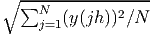
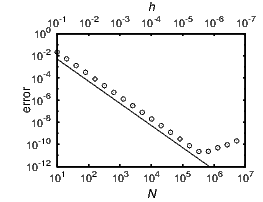
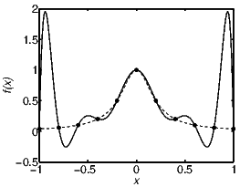
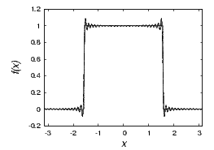
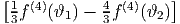

While mathematical functions can be defined on a continuous variable, any numerical representation is limited to a finite number of values. This discretization of the continuum is the source of profound issues for numerical interpolation, differentiation, and integration.
Consider numerical differentiation with a simple finite-difference: u(x) = [f(x + h) - f(x - h)]∕2h. With a Taylor expansion we can immediately verify that u(x) = f′(x) + O(h2). For small h, this formula provides therefore an approximation to the first derivative of f. When the resolution is doubled, the discretization error, O(h2), decreases by a factor of 4. Since the error decreases with the square of the interval h, the method is said to converge with “second order.” In general, when the discretization error is O(hp) then p is called the “order of convergence” of the method.
The resolution can be expressed in terms of the number of grid points N, which is simply inversely proportional to h. To verify the convergence of a numerical approximation, the error can be defined as some overall difference between the solution at resolution 2N and at resolution N. Ideal would be the difference to the exact solution, but the solution at infinite resolution is usually unavailable, because otherwise we would not need numerics. “Norms” (denoted by ||⋅||) provide a general notion of the magnitude of numbers, vectors, matrices, or functions. One example of a norm is the root-mean-square ||y|| = . Norms of differences therefore describe the overall difference, deviation, or error. The ratio of errors, ||uN - uN∕2||∕||u2N - uN||, must converge to 2p, where p is the order of convergence. Table 7.1 shows a convergence test for the center difference formula shown above applied to an example function. The error E(N) = ||u2N - uN|| becomes indeed smaller and smaller with a ratio closer and closer to 4.
| N | E(N) | E(N∕2)∕E(N) |
| 20 | 0.005289 | |
| 40 | 0.001292 | 4.09412 |
| 80 | 0.0003201 | 4.03556 |
| 160 | 7.978E-05 | 4.01257 |
The table is all that is needed to verify convergence. For deeper insight however the errors are plotted for a wider range of resolutions in figure 7.1. The line shown has slope -2 on a log-log plot and the convergence is overwhelming. The bend at the bottom is the roundoff limitation. Beyond this resolution the leading error is not discretization but roundoff. If the resolution is increased further, the result becomes less accurate. For a method with high-order convergence this roundoff limitation may be reached already at modest resolution. A calculation at low resolution can hence be more accurate than a calculation at high resolution!

To understand the plot more completely, we check for quantitative agreement. In the convergence test shown in the figure, double precision numbers are used with an accuracy of about 10-16. The function values used for figure 7.1 are around 1, in order of magnitude, so that absolute and relative errors are approximately the same. The roundoff limitation occurs in this example at an accuracy of 10-11. Why? In the formation of the difference f(x + h) -f(x-h) a roundoff error of about 10-16 is introduced, but to obtain u, it is necessary to divide by 2h, enhancing the error because h is a small number. In the figure the maximum accuracy is indeed approximately 10-16∕(2 × 5 × 10-6) = 10-11. The total error is the sum of discretization error and roundoff error O(h2) + O(ϵ∕h), where ϵ ≈ 10-16. The total error is a minimum when h = O(ϵ1∕3) = O(5 × 10-6). This agrees perfectly with what is seen in figure 7.1.
The same convergence test can be used not only for derivatives, but also for integration schemes, ordinary differential equations, partial different equations, etc.
Brainteaser: The convergence test indicates that ||u2N -uN||→ 0 as the resolution N goes to infinity (roundoff ignored). Does this mean lim N→∞||uN - u||→ 0, where u is the exact, correct answer?
A function can be locally described by its Taylor expansion:
The very last term is evaluated at x + ϑ, which lies somewhere between x and x + h. Since ϑ is unknown, this last term provides a bound on the error when the series is truncated after n terms. For example, n = 0 tells us that |f(x + h) - f(x)|≤ Mh, where M = max 0≤ϑ≤h|f′(x + ϑ)|.
The derivative of a function can be approximated by a difference over a finite distance, f′(x) ≈ [f(x + h) - f(x)]∕h, the “forward difference” formula, or f′(x) ≈ [f(x) - f(x - h)]∕h, the “backward difference” formula. The Taylor expansion can be used to verify finite difference expressions for derivatives and to obtain an error bound: f′(x) = [f(x + h) - f(x)]∕h + O(h) and f′(x) = [f(x) - f(x - h)]∕h + O(h). A function is said to be “of order p”, O(hp), when for sufficiently small h its absolute value is smaller than a constant times hp.
Another possibility is the “center difference”
The center difference is accurate to O(h2), not just O(h) as the one-sided differences are, because the f′′ terms in the Taylor expansions of f(x + h) and f(x-h) cancel. At first sight it may appear awkward that the center point, f(x), is absent from the difference formula. A parabola fitted through the three points f(x + h),f(x), and f(x - h) undoubtedly requires f(x). However, it is easily shown that the slope at the center of such a parabola is independent of f(x). Thus, it makes sense that the center point does not appear in the finite difference formula for the first derivative.
The second derivative can also be approximated with a finite difference formula, f′′(x) ≈ c1f(x + h) + c2f(x) + c3f(x - h), where the coefficients c1, c2, and c3 can be determined with Taylor expansions. This is a general method to derive finite difference formulas. We find
A mnemonic for this expression is the difference between one-sided first derivatives: {[f(x + h) - f(x)]∕h - [f(x) - f(x - h)]∕h}∕h. With three coefficients, c1, c2, and c3, we only expect to match the first three terms in the Taylor expansions, but the next order, involving f′′′(x), vanishes automatically. Hence, the leading error term is O(h4)∕h2 = O(h2).
With more points (a larger “stencil”) the accuracy of a finite-difference approximation can be increased, at least as long as the high-order derivative that enters the error bound is not outrageously large. The error term involves a higher power of h, but also a higher dervative of f.
Finite differences can also be used to solve partial differential equations (PDEs). As a simple example take the Laplace equation ∇2f = 0 in two dimensions f = f(x,y), supplemented by boundary conditions.
Each derivative can be approximated by a finite difference. Since the second derivative is approximately f′′(x) = [f(x - h) - 2f(x) + f(x + h)]∕h2, a discretization of the Laplace equation is
where all blank entries are zero. This system of equations can be solved for f. The dimension of this matrix equals the number of grid points, so it is huge, but it is sparse.
When every derivative in a PDE is replaced by a finite difference, the PDE turns into a large system of equations. This very general approach often leads to a workable numerical scheme.
The same finite difference expression for the Laplace equations suggests another method of solution. The center element f(0, 0) is the average of its four neighbors,
Interpolation is concerned with how to approximate a function between two or more known values. Approximation by a polynomial springs to mind; after all, the value of a polynomial for any x can be calculated in a finite number of steps. Figure 7.2 displays a fit with a polynomial which passes exactly through equally spaced points on the abscissa. The center part of the function is well approximated by the polynomial, but the polynomial oscillates excessively near the boundary of the domain. Although the polynomial goes exactly through every point demanded, it badly represents the function in between grid points. This oscillatory problem is known as the “Runge phenomenon”.

If a function should be approximated over the entire domain, it is better to use many polynomials of low degree than a single polynomial of high degree. Piecewise polynomial fits, where the polynomials are joined smoothly with each other, are called “splines.” For example, cubic polynomials which are joined such that the first derivative matches are a common choice, known as cubic spline interpolation.
According to the Weierstrass Approximation Theorem, it is possible to approximate any continuous function on a closed interval with a single polynomial, such that the maximum difference between the function and its approximation is arbitrarily small. If f is a continuous function on [a,b], then for any given ϵ > 0, there exists a polynomial p such that |f(x) -p(x)| < ϵ for all x in [a,b]. Such polynomials do not coincide with the function at equally spaced intervals, so this is not a contradiction to the above example. Best fitting polynomials intersect the function at points that are more densely spaced toward the interval boundary.
A problem similar to the “Runge phenomenon” occurs for approximations of discontinuous functions by Fourier series, and is widely known as “Gibbs phenomenon”. Figure 7.3 shows an example where a Fourier series does not represent the function everywhere. By design, the Fourier approximation goes through every required point, again uniformly spaced, but near the discontinuity it is a bad approximation in between grid points. Note that from the perspective of Fourier series, a non periodic function has a step discontinuity at the boundary.

For interpolation in two variables, linear interpolation does not immediately generalize, because a plane does not simultaneously fit four points. A common approach, for a regular grid, is an interpolation formula f(x,y) = a0 + a1x + a2y + a3xy, known as “bilinear” interpolation. It is called bilinear, because it is the product of two linear functions. Along the x-direction this is exactly linear; along the y-direction it is linear; along any other direction it is not linear. For a unit square f(x,y) = f(0, 0)(1 - x)(1 - y) + f(1, 0)x(1 - y) + f(0, 1)(1 - x)y + f(1, 1)xy. The interpolation is continuous, but derivatives are discontinuous when changing from one grid cell to another. This method generalizes to higher dimensions.
An irregular grid can be cumbersome to deal with, from the perspective of interpolation as well as many others. Triangulation is one approach.
The simplest way of numerical integration is to sum up function values. Rationale can be lent to this procedure by thinking of the function values fj = f(xj) as connected with straight lines. Let fj denote the function at xj = x0 + jh. The area of the first trapezoidal segment is, using simple geometry, (f0 + f1)∕2. The area under the piecewise linear graph from x0 to xN is
Instead of straight lines it is also possible to imagine the function values are interpolated with quadratic polynomials. Fitting a parabola through three points and integrating, one obtains
For a parabola the approximate sign becomes an exact equality. This integration formula is well-known as “Simpson’s rule.” Repeated application of Simpson’s rule leads to
An awkward feature of this “composite Simpson formula” is that function values are weighted unequally, although the grid points are equally spaced.
There is an exact relation between the integral and the sum of a function, known as “Euler-Maclaurin summation formula”:
The Euler-Maclaurin summation formula enables us to determine the error when an integral is approximated by a sum, just as the Taylor expansion provided the error of a finite difference formula. For m = 0,
The first order of the Euler-Maclaurin summation formula is the trapezoidal rule and the error for trapezoidal integration is -h2(b - a)f′′(ϑ)∕12.
The Euler-Maclaurin summation formula for m = 1 is
The composite Simpson formula can be derived by using the Euler-Maclaurin summation formula with spacings h and 2h. The integration error obtained in this way is h4(b - a)∕180. Since the error is proportional to f(4), applying Simpson’s rule to a cubic polynomial yields the integral exactly, although it is derived by integrating a quadratic polynomial.
The fourth-order error bound in the Simpson formula is larger than in the trapezoidal formula. The Simpson formula is only more accurate than the trapezoidal rule, because it better approximates the boundary regions. Away from the boundaries, the Simpson formula, the method of higher order, yields less accurate results than the trapezoidal rule, which is the penalty for the unequal coefficients. At the end, simple summation of function values is an excellent way of integration in the interior of the domain. Thinking that parabolas better approximate the area under the graph than straight lines is illusionary.